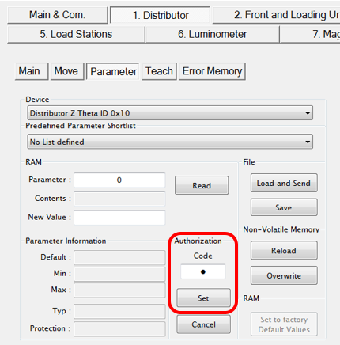
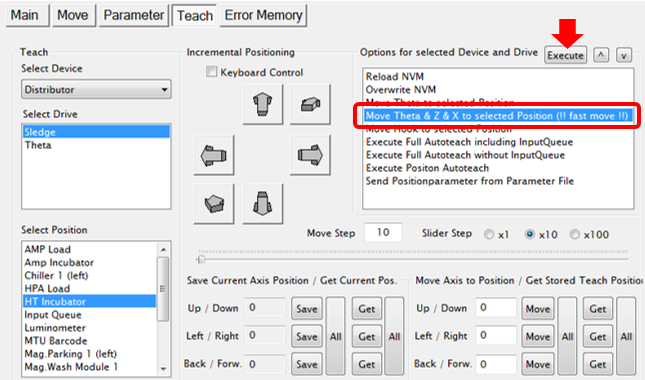
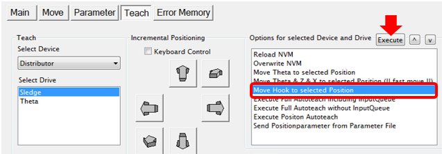
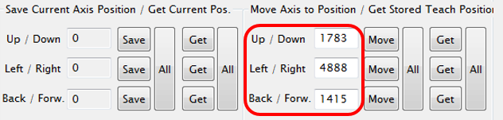
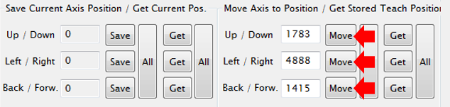
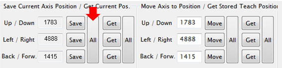
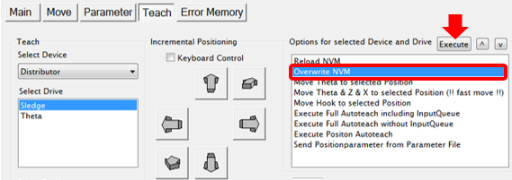
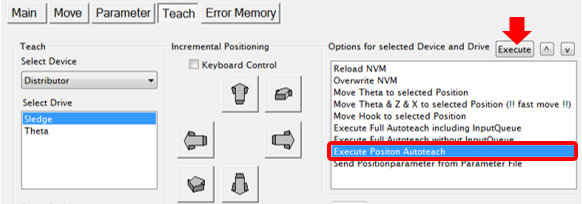

Manually Teaching the Distributor to Any Module
Background
If Linear Distributor teaching to any module using the Autoteach function does not work, the distributor must be manually taught to the module. This is done by entering default teaching coordinates to position the hook close the module teach point. After saving the default coordinates, the hook should be close enough for the Autoteach function to work.
The default coordinates for each module are provided in the Procedure.  The image below explains the meaning of the teach positions listed in Service Software.
The image below explains the meaning of the teach positions listed in Service Software.
- Up/Down: Z-axis position
- Left/Right: X-axis position
- Back/Forward: Distributor hook extension

Time Required
30 minutes
Procedure
- The Linear Distributor must be correctly aligned and taught to the Input Queue in accordance with Distributor Alignment and Teaching Procedure.
- Ensure the Distributor is initialized. Also, the following modules must be initialized in order to manual teach: Luminometer, Load Stations, Magwashes, and Incubators (Slot must be moved to Slot 1).
- On the
 1. Distributor > Parameter tab, enter 1 in the Authorization Code field and select Set.
1. Distributor > Parameter tab, enter 1 in the Authorization Code field and select Set.
- On the 1. Distributor > Teach tab, ensure “Sledge” is selected in the Select Drive list.
- Select the desired module from the Select Position list.

Note—The Service Drawer will have to be pushed in and latched if the Output Queue or MagWashes are selected. The drawer can be out for observation on other modules. - From the Options for selected Device and Drive list, select the “Move Theta & Z & X to selected Position (!! fast move !!)” option and click Execute. This will move the Distributor in front of the selected module.

- From the Options for selected Device and Drive list, select the “Move Hook to selected Position” option and select Execute to extend the hook out of the distributor to the teach position.

- In the Move Axis to Position column, enter the three default teaching coordinates for the selected module from the table below.

- One at a time, select the Move button for the Up/Down coordinate, the Left/Right coordinate, and the Back/Front coordinate. Each time the value should update in the Save Current Axis Position list.

- Select the (Save) All button. This will save the coordinates to RAM.

- From the Options for selected Device and Drive list, select “Overwrite NVM” and select Execute to permanently save the coordinates to NVM.

- From the Options for selected Device and Drive list, select “Execute Position Autoteach” and select Execute.
Note—The Service Drawer must be closed to manually teach the Output Queue and Mag Wash modules. It is a good practice to leave the drawer open during manual teach of other modules so the distributor can be observed. 
- When the Autoteach completes successfully, select “Overwrite NVM” again and select Execute to permanently save the coordinates to NVM.
- If the Autoteach still fails:
- Place a marked MTU (see Distributor Alignment and Teaching Procedure) into the module.
- Extend the hook (!!fast move!! to module and extend the hook), see Steps 5-7.
- Check the position of the hook, it should be close to the marks on the MTU tab. Make adjustments to get the hook within the markings and touching the tab. Use the Incremental Positioning controls if necessary, and Save and Overwrite to NVM.
- Try to autoteach again.
Verification
- Run an Operational Qualification (OQ) on the selected module.
 button at the top of the page to send feedback, comments, or change requests.
button at the top of the page to send feedback, comments, or change requests.